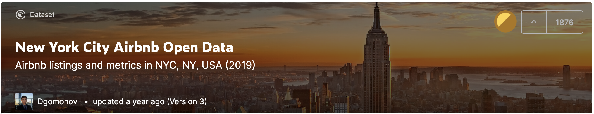

Submit the following programs via the honors section of Gradescope:
- HC 1: Team Contract and Dataset (Airbnb or another dataset of your choice) Due Date: 1 September

Throughout the semester, we will analyze the Airbnb dataset of New York listings from 2019.
Step 1 -- Project structure:
We will work in teams. Each team will choose a borough to analyze. Each team member will then choose a neighborhood in that borough to report on.
Throughout the semester each team will provide different analyses of the overall borough supplemented by analyses of the chosen neighborhoods.
These analyses will be broken down across different assignments and will be a mix of research and data analysis.We propose to use the Airbnb dataset of New York listings from 2019. However, we give you the freedom to choose a different dataset if that would inspire you more. Another great place to look for data is NYC Open Data. If you choose a different dataset, it must have the following properties to guarantee that you will be able to fulfill all the assignments despite working with different data:
- The data must have an attribute (column) corresponding to neighborhoods (preferably NYC)
- It must include some numerical data
- It must include some categorical data
- It must include geographical locations (latitude and longitude columns, or exact address column)
Discuss with your assigned team to decide on a dataset, then move on to Step 2.
Note: You don't need to identify the alternate dataset in this assignment, but if you are considering it you should indicate so in Step 2 and must identify the dataset no later than our next meeting on September 4.Step 2 -- Team Contract:
Work with your assigned team to complete the Team Contract.
Once your contract is complete and signed by all team members, upload a .pdf to the assignment HC 1. in the honors section of Gradescope. This will be a group submission (one submission per team). Unlike the Python code, it is not automatically graded.
- HC 2: Neighborhood Analysis
Due Date: 8 September
To begin, discuss with your team to pick a neighborhood in your team's borough (a different neighborhood for each team member). Keep in mind that you want all the neighborhoods together to be representative of the borough. You also want to be sure your neighborhood is well represented in the dataset.
Create a single page summary of your neighborhood that includes at least the following:
- Name of the neighborhood (include in the title),
- The zip code(s) of your neighborhood,
- A map of New York City with your neighborhood highlighted,
- A photo or image that captures your neighborhood and
- The demographics of your neighborhood.
A great resource for your analysis is Social Explorer. Note: you don't need to necessarily create an account. From the top menu, select Resources - Demographic Profiles and enter the zip code(s) of your neighborhood to find a wealth of information.Submit a .pdf file containing your summary.
- HC 3: Neighborhood Rankings
Due Date: 15 September
Design a ranking for the most desirable features of a neighborhood.
There are multiple rankings of New York City Neighborhoods. For example,
- Niche,
- DNA Info's rankings,
- Brick Underground,
- Curbed's Walkable Neighborhoods,
- BuzzFeed,
- Street Advisor
- Assess what these rankings have in common and how they differ.
- Which ranking do you favor and why?
- What qualities make a neighborhood a desirable place book a room or apartment in?
- Collate a list of the three most important.
- How does each neighborhood in your team's borough fare according to this ranking?
Submit a .pdf file containing your assessment of the rankings and the three most desirable qualities, as well as a ranking of your team's borough (if all neighborhoods fare the same, you may indicate so and group the discussion to the borough). You should use complete sentences, compare and contrast the rankings above and justify the three qualities that your group thought most important. This will be a group submission (one submission per team).
- HC 4: Synchronous Discussion
Due Date: 25 September IN LAB
In this meeting we will discuss your findings from HC 2 and HC 3. Before the meeting, your team should select a speaker from the designated speakers in section A.- c. on your Team contract. This team member will be responsible for summarizing the overall discussion of the borough from that of the neighborhoods to the entire group. The speaker may also call on another team member if a neighborhood-specific aspect is particularly relevant to the discussion.
No submission necessary. This assignment will be graded based on your group's contribution to the discussion.
Grading criteria:- Speaker presents one particular finding from HC2, explains why it was chosen and indicates if individual neighborhood analyses aligned or differed on this particular finding.
- Speaker presents the 3 neighborhood qualities chosen for HC3, explains why these were chosen and indicates if individual neighborhoods aligned or differed for this ranking.
- Speaker provides satisfactory summary in 5 minutes
- HC 5: Highlighted Map
Due Date: 6 October


For this program, we will create a highlighted map centered around your neighborhood, with the region within about a 1/4 mile box around a marker at the center of the neighborhood at full brightness, the region outside that box at 50% brightness.
To do this:
- Create a .png file of a satellite map, centered on your neighborhood (Google maps works well for this, but you can use any mapping site to create your base map).
- Write a Python program that reads in an image and saves the image to another file. Run your program to make sure the reading and saving of an image works.
- Set the upper region of the image to 50% brightness (hint: uses slices and see example in Lecture 3 and 4). Run your program to make sure it has dimmed up the upper region and adjust to get the correct dimenssions.
- Set the lower region of the image to 50% brightness (hint: think about what negative numbers mean as indices). Run your program and fix any bugs.
- Next, dim the side regions (hint: think about what parts of the image have not been dimmed and change only those regions.)
Submit your answer as a .pdf file to gradescope.
More to come...